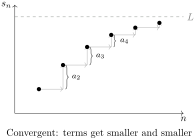
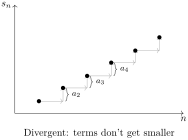

Section 7.1 nth Term Test for Divergence
Geometric series and telescoping series are the 2 main examples of series that we can find their sums exactly. However, for most series, we cannot find their sums exactly, and we need to use tests to determine whether they converge or diverge.
This first test we will learn basically says that if the terms of a series do not eventually become small, then the series cannot converge.
Theorem 7.1.2. nth Term Test for Divergence.
Intuitively, for a series to converge, recall that its partial sums must approach a single number. This can only happen if the numbers you’re adding eventually become smaller and smaller, so they change the sum by less and less. If the terms do not become small, then the partial sums can’t approach a limit, and the series diverges.


Example 7.1.3. Divergence of n/(2n+1).
Consider the series,
\begin{equation*}
\sum_{n=1}^{\infty} \frac{n}{2n + 1}
\end{equation*}
The terms do not approach zero, because,
\begin{equation*}
\lim_{n \to \infty} \frac{n}{2n + 1} = \frac{1}{2} \neq 0
\end{equation*}
Therefore, by the \(n\)th term test, the series diverges. Intuitively, consider its partial sums: Partial Sums of \(\sum_{n=1}^{\infty} \frac{n}{2n + 1}\). Notice that the partial sums grow and grow, and don’t approach a single number. Intuitively, since the terms approach \(\frac{1}{2}\text{,}\) the series is like adding a number close to \(\frac{1}{2}\) over and over again. Therefore, the series is going to diverge.
Example 7.1.4. Oscillating Series.
Consider the series,
\begin{equation*}
\sum_{n=1}^{\infty} (-1)^{n+1} = 1 - 1 + 1 - 1 + \dots
\end{equation*}
This series diverges, because its partial sums will be,
\begin{equation*}
1, 0, 1, 0, 1, 0, \dots
\end{equation*}
After we add 1, the sum becomes 1, and after we add -1, the sum becomes 0, and so on. In particular, we could say that the partial sums are given by,
\begin{equation*}
s_n = \begin{cases} 1 \amp \text{$n$ is odd} \\ 0 \amp \text{$n$ is even} \end{cases}
\end{equation*}
The limit of the partial sums as \(n \to \infty\) does not exist, and therefore the sum diverges. Alternatively, we can use the \(n\)th term test. The limit \(\lim_{n \to \infty} (-1)^{n+1}\) does not exist, and so by the \(n\)th term test, the series diverges.
Example 7.1.5. Divergence of n^2/(n^2-1).
Consider the series,
\begin{equation*}
\sum_{n=2}^{\infty} \frac{n^2}{n^2 - 1}
\end{equation*}
As \(n \to \infty\text{,}\) \(\frac{n^2}{n^2 - 1} \to 1\text{,}\) and so by the \(n\)th term test, the series diverges.
Example 7.1.6. Divergence of cos(2/n).
Consider the series
\begin{equation*}
\sum_{n=1}^{\infty} \cos{\brac{\frac{2}{n}}}
\end{equation*}
We have
\begin{align*}
\lim_{n \to \infty} \cos{\underbrace{\brac{\frac{2}{n}}}_{\to 0}} \amp= \cos{0}\\
\amp= 1 \neq 0
\end{align*}
Therefore, by the \(n\)th term test, the series diverges.
In summary,
\begin{equation*}
\boxed{\text{If the terms don't approach 0, then the series diverges}}
\end{equation*}
In fact, the reverse direction (the converse) of this statement is not true, in that if the terms of a sequence become small (\(\lim_{n \to \infty} a_n = 0\)), it is not necessarily true that the series always converges. In other words, if the terms eventually become small, the \(n\)th term test is inconclusive.
Subsection 7.1.1 Harmonic Series
Definition 7.1.8. Harmonic Series.
The harmonic series, is the sum of the reciprocals of the natural numbers,
\begin{equation*}
\sum_{n=1}^{\infty} \frac{1}{n} = 1 + \frac{1}{2} + \frac{1}{3} + \frac{1}{4} + \dots
\end{equation*}
Remark 7.1.9.
This series is called the harmonic series, because it is related to the harmonics of a vibrating string. The \(n\)th harmonic of a vibrating string is the frequency that is \(n\) times the fundamental frequency, and the amplitude of the \(n\)th harmonic is proportional to \(\frac{1}{n}\text{.}\)
In fact, the harmonic series diverges, even though its terms become small. Intuitively, consider its partial sums: Partial Sums of the Harmonic Series up to \(N=200\) terms. Notice that the partial sums grow and grow, even if they grow slowly. You might recognize the pattern of partial sums looks like a logarithmic function (like \(\ln{x}\)), and indeed, the \(n\)th partial sum of the harmonic series is approximately \(\ln{n}\text{,}\) which goes to infinity as \(n \to \infty\text{.}\) Therefore, the harmonic series diverges.
In summary,
\begin{equation*}
\boxed{\text{If } \lim_{n \to \infty} a_n = 0 \text{, then the } n \text{th term test is inconclusive}}
\end{equation*}
Example 7.1.10. Inconclusive Test for n/(n^2+1).
Consider the series,
\begin{equation*}
\sum_{n=1}^{\infty}\frac{n}{n^2+1}
\end{equation*}
As \(n \to \infty\text{,}\) \(\frac{n}{n^2+1} \to 0\text{,}\) and so by the \(n\)th term test, the test is inconclusive. In fact, this series diverges (we will see how to show this later on).
Example 7.1.11. Divergence of ln(1/n).
Consider the series,
\begin{equation*}
\sum_{n=1}^{\infty} \ln{\brac{\frac{1}{n}}}
\end{equation*}
As \(n \to \infty\text{,}\) \(\frac{1}{n} \to 0+\text{,}\) and so \(\ln{(\frac{1}{n})} \to -\infty\text{,}\) which is not 0. Therefore, by the \(n\)th term test, the series diverges.
Subsection 7.1.2 Examples
Exercise Group 7.1.1. nth Term Test (★).
Use the \(n\)th term test to determine if each series diverges, or if the test is inconclusive.
(a)
\(\displaystyle\sum_{n=1}^\infty \frac{n}{n+1}\)
(b)
\(\displaystyle\sum_{n=1}^{\infty} \frac{6n^3}{4n^3 + 3}\)
(c)
\(\displaystyle\sum_{n=1}^{\infty} \frac{5n^4}{6n^4 + 6}\)
(d)
\(\displaystyle\sum_{n=1}^{\infty}\frac{n^3}{n^3+1}\)
(e)
\(\displaystyle\sum_{n=0}^{\infty}\frac{1}{1000+n}\)
(f)
\(\displaystyle\sum_{n=4}^{\infty} \frac{e^n}{n^9}\)
(g)
\(\displaystyle\sum_{n=2}^{\infty}\frac{n}{\ln n}\)
(h)
\(\displaystyle\sum_{n=1}^\infty \frac{2^n}{n+1}\)
(i)
\(\displaystyle\sum_{n=1}^\infty \frac{n}{\sqrt{n^2+1}}\)
(j)
\(\displaystyle\sum_{n=4}^{\infty}\ln\frac{n}{2}\)
Exercise Group 7.1.2. nth Term Test (★★).
Use the \(n\)th term test to determine if each series diverges, or if the test is inconclusive.
(a)
\(\displaystyle\sum_{n=1}^{\infty}\frac{\sqrt{n^2+1}}{n}\)
(b)
\(\displaystyle\sum_{n=1}^{\infty}\frac{n}{\sqrt{3n^2+3}}\)
(c)
\(\displaystyle\sum_{n=2}^\infty \frac{\sqrt{n}}{\ln n}\)
(d)
\(\displaystyle\sum_{n=2}^{\infty}\frac{\sqrt{n}}{\ln^{10}n}\)
(e)
\(\displaystyle\sum_{n=1}^\infty \frac{3^n}{n^2+1}\)
(f)
\(\displaystyle\sum_{n=1}^\infty \frac{5^n}{4^n+3}\)
(g)
\(\displaystyle\sum_{n=1}^{\infty}\frac{4^{n+1}}{3^n-2}\)
(h)
\(\displaystyle\sum_{n=1}^{\infty}\frac{1+4^n}{1+3^n}\)
(i)
\(\displaystyle\sum_{n=1}^{\infty}\frac{n+3^n}{n+2^n}\)
(j)
\(\displaystyle\sum_{n=1}^{\infty}\frac{n^2}{2^n}\)
(k)
\(\displaystyle\sum_{n=1}^\infty \sqrt{\frac{n+1}{n}}\)
(l)
\(\displaystyle\sum_{n=1}^\infty \frac{e^n}{10+e^n}\)
Exercise Group 7.1.3. nth Term Test (★★★).
Use the \(n\)th term test to determine if each series diverges, or if the test is inconclusive.
(a)
\(\displaystyle\sum_{n=1}^\infty \ln\brac{\frac{2n^6}{1+n^6}}\)
(b)
\(\displaystyle\sum_{n=1}^\infty \brac{1+\frac{1}{n}}^n\)
(c)
\(\displaystyle\sum_{n=1}^{\infty}\frac{n^3}{n!}\)
(d)
\(\displaystyle\sum_{n=1}^\infty \brac{\frac{n+6}{n}}^n\)
Hint.
(e)
\(\displaystyle\sum_{n=1}^\infty n\sin\frac{1}{n}\)
(f)
\(\displaystyle\sum_{n=1}^{\infty} n^{1/n}\)
Subsection 7.1.3 Advanced Examples
Exercise Group 7.1.4. Advanced Examples (★★★★).
Use the \(n\)th term test to determine if each series diverges, or if the test is inconclusive.
(a)
\(\displaystyle\sum_{n=1}^\infty n\tan\frac{1}{n}\)
Hint.
(b)
\(\displaystyle\sum_{n=1}^{\infty} 2n \sin{\brac{\frac{2}{n}}}\)
(c)
\(\displaystyle\sum_{n=1}^{\infty}\brac{\frac{n}{n+10}}^n\)
Hint.
(d)
\(\displaystyle\sum_{n=1}^{\infty} \frac{n^n}{n!}\)